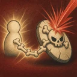

액티브뼈 방패자신에게 최대 체력의 10%와 마법력의 30%를 더한 만큼의 방패를 2초간 부여합니다. 동시에 자신을 중심으로 1칸 이내의 모든 적을 2초간 도발합니다. 도발된 적은 그동안 자신만 공격하며 스킬을 새로 쓰지 못합니다. 도발이 끝날 때까지 마나가 차지 않습니다.
패시브뼈의 호위전투 시작 시 자신을 제외한 1칸 이내 아군 중 최대 체력이 가장 낮은 대상과 연결됩니다. 연결된 아군이 받는 직접 피해의 15%를 자신이 대신 받습니다. 자신의 체력이 20% 이하가 되면 연결이 해제됩니다.
고유쌍골 재기바가지 인형을 보유하고 있으면, 빠가지가 처음 쓰러질 때 0.5초 후 바가지로 한 번 부활합니다. 부활한 바가지는 보유한 바가지의 레벨로 싸우며, 체력은 최대 체력의 50%, 마나는 최대 마나의 0%입니다. 부활 후에는 매초 최대 체력의 10%만큼 체력을 잃습니다.